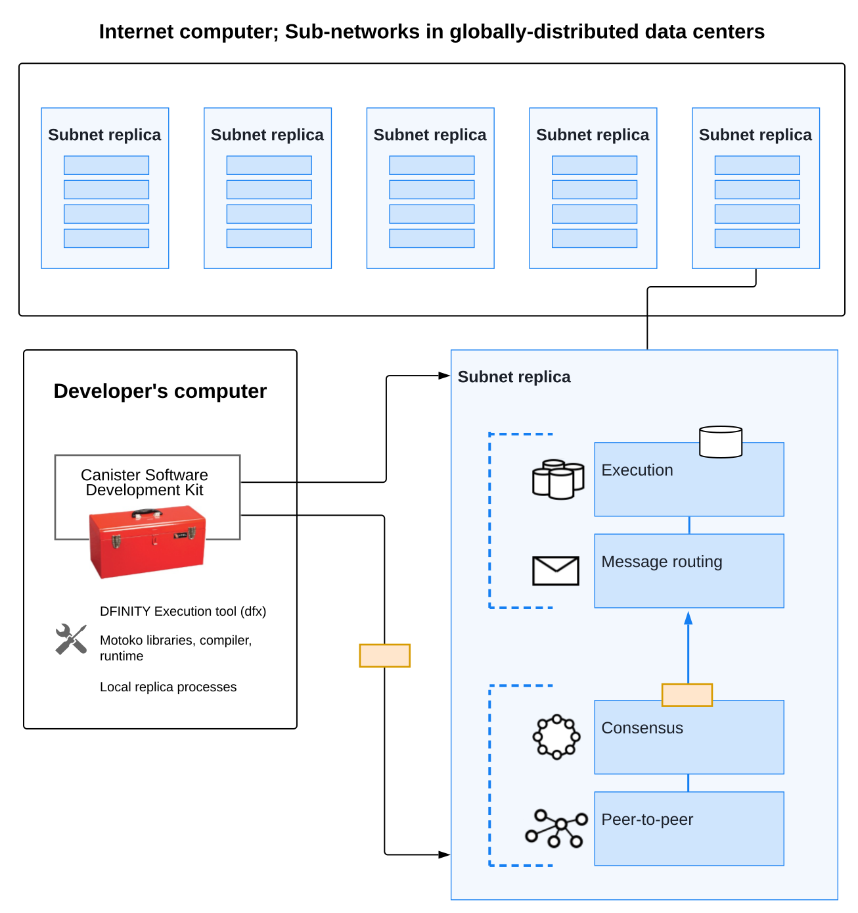

容器和代码
要记住的最重要的原则之一是 Internet Computer 是一个允许以分布式、复制方式运行软件的区块链。
当您为在 Internet Computer 上运行的 dapp 编写源代码时，您会将源代码编译为 WebAssembly 模块。 当您在 Internet Computer 区块链上部署包含您的程序的 WebAssembly 模块时，程序将在称为 canister smart contract 或简称 canister 的概念计算单元内执行。
部署后，最终用户可以通过前端客户端（例如浏览器）访问您为该容器定义的入口点函数，与容器智能合约进行交互。
容器包括程序和状态
容器智能合约类似于容器，两者都部署为一个软件单元，其中包含应用程序或服务的编译代码和依赖项。
容器化允许应用程序与环境解耦，从而实现轻松可靠的部署。 然而，容器与容器的不同之处在于它还存储有关当前软件*状态*的信息。
虽然容器化应用程序可能包含有关应用程序运行环境状态的信息，但容器能够保存由于调用其函数而导致的状态更改记录。
查询和更新方法
这个由程序和状态组成的容器的概念是一个重要的概念。 特别是它与调用容器端点时应该预期的行为有关。 只有两种类型的调用:非提交*查询调用*（任何状态更改都被丢弃）和提交*更新调用*（状态更改被持久化）。
| Type | Key points to remember |
|---|---|
Query calls |
允许用户查询容器的当前状态或调用对容器状态进行操作的函数*而不更改它*。
|
更新调用 |
允许用户更改容器的状态并保持*更改*。
|
作为开发人员，重要的是要认识到查询容器的调用和更改容器状态的调用之间的这种关系。 特别是，您应该牢记安全性和性能之间的内在权衡。
如何为 Internet Computer 开发 dapps
对于程序员和软件开发人员，Internet Computer 区块链在一个框架内提供了独特的功能和机会，可以简化您如何设计、构建和部署 dapps。 该框架的一个关键部分是一种新的通用编程语言 Motoko。 Motoko 是一种编程语言，专为充分利用 Internet Computer 区块链提供的独特功能而设计，包括:
-
直接使用
actor对象和类定义程序的能力。 -
使用
async和await语法来启用异步消息编程，就好像它是同步处理一样。 -
自动支持消息序列化和反序列化。
-
使用数据结构利用正交持久性的能力，无需外部数据库或存储卷。
作为一种现代的高级编程语言，Motoko 提供了自己的一些关键特性，包括:
-
支持大整数运算和溢出保护。 *一个健全的类型系统，静态检查每个程序，以确保它可以在所有可能的输入上没有类型错误的情况下执行。
-
支持函数抽象、用户定义的类型定义和用户定义的参与者。
有关 Motoko 编程语言本身的更多详细信息，包括语法约定和支持的功能，请参阅Motoko 编程语言指南。
下图提供了作为 Internet Computer 生态系统一部分的开发环境的简化深入视图。

容器、actor和您生成的代码
在准备使用 Motoko 编程语言编写程序时要牢记的最重要原则之一是 Motoko 使用 actor-based 编程模型。
actor 是一种特殊类型的对象，它在隔离状态下处理消息，使消息能够被远程和异步处理。
通常，每个容器智能合约都包含一个参与者对象的编译代码。 每个容器还可能包含一些附加信息，例如接口描述或前端资产。 您可以创建包含多个容器的项目，但每个容器只能包含一个actor。
为什么你的代码被编译成 WebAssembly
当你编译 Motoko 代码时，结果是一个 WebAssembly 模块。 WebAssembly 是一种低级计算机指令格式，可移植并在大多数现代计算机硬件上干净地抽象程序执行。 它广泛支持在 Internet 上运行的程序，并且非常适合部署旨在在 Internet Computer platform 上运行的 dapp。
使用 Motoko，开发人员可以编译为可移植的 WebAssembly，同时仍然使用简单的高级语言交付安全的 dapp。
Motoko 语言提供了许多其他高级现代语言共有的特性——比如类型安全和模式匹配。 此外，Motoko 提供了内置支持，以使用 Actor 定义消息服务，这种方式特别适合 Internet Computer platform 并且无论您是新手还是经验丰富的程序员都易于学习。
本指南在使用 SDK 编写程序的上下文中介绍了 Motoko 编程语言的基本功能。 有关 Motoko 编程语言本身的更多详细信息，请参阅Motoko 编程语言指南。
身份和身份验证
用户启动的容器操作和容器到容器操作之间的主要区别之一是容器在 Internet Computer 上具有明确注册的身份。
用户主体没有中央注册表，但用户可以选择使用一个（或多个）数字签名密钥来标识自己。 用户的私钥用于签署消息，这些消息与他们的公钥一起发送到 Internet Computer。 Internet Computer 对用户进行身份验证并将主体传递给容器——容器可以根据主体选择实施它想要的任何授权策略。
在高层次上，首次使用的用户在与 Internet Computer 的第一次交互期间生成一个未签名的密钥对并从公钥中获取他们的主要标识符。 返回用户使用已由用户代理安全存储的私钥（或多个密钥）进行身份验证。 有权访问多个容器的用户可以管理用于与每个容器关联的身份验证的密钥和设备。
单个用户可以拥有多个公私密钥对，用于从不同设备（例如在不同计算机、手机或平板电脑上运行的浏览器）访问容器，但这些派生密钥都映射到主标识符。
资源消耗和周期
所有容器都消耗资源，包括用于执行的 CPU 周期、用于路由消息的带宽以及用于持久数据的存储。这些资源是使用称为 cycles 的成本单位支付的。循环可以通过转换 ICP 代币获得，并由每个容器存储在本地余额中。
-
容器必须能够支付完整执行（全部或全部执行）的费用，但与一个燃料费单位相关的成本将使高效程序具有成本效益。
-
通过设置容器可以消耗多少个周期的限制，平台可以防止恶意代码完全接管资源。
-
燃料费旨在以稳定或通缩的方式反映运营的实际成本，以便程序执行成本保持不变或随着运营效率的提高而降低。因此，ICP 到燃料费的转换率会根据当前的 ICP 市场价值进行相应调整。 运营成本的相对稳定性使得预测处理（例如，一百万条消息）所需的燃料费变得更加容易。